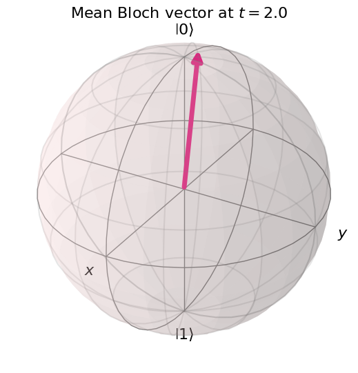
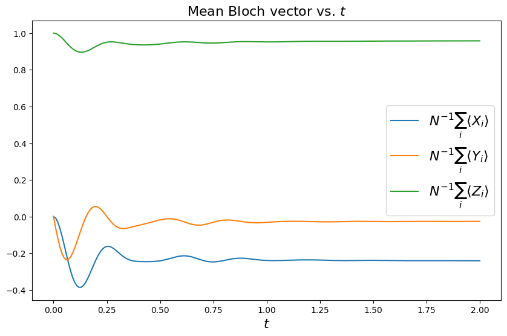

Solving the Lindblad dynamics of a qubit chain¶
In this tutorial we walk through an example of solving the time evolution of the density matrix of
coupled qubits using qiskit_dynamics. The model that we solve consists of a time-independent
Hamiltonian for qubits interacting with their nearest neighbors along a ring. In addition, energy
relaxation terms acting on each qubit are modeled by using a non-Markovian master equation in
Lindblad form. We will discuss the system’s steady state as a function of the model parameters.
In the sections below we define a model, solve the dynamics and plot some observables using the following steps:
Define the number of qubits and precompute some matrix operators.
Define all relevant parameters and setup a
Solverinstance with the model of the system, consisting of the Hamiltonian and the jump operators of the Lindblad dissipator.Define the initial state and other parameters for the initial value problem, and evolve the system state.
Define observables and calculate their values as a function of time.
Plot some observables and discuss the results.
The model that we solve describes the time evolution of \(N\) qubits with coherent dynamics dictated by a given Hamiltonian, and the environment modeled as a memory-less (Markovian) bath. Together, the density matrix evolves according to the Lindblad master equation,
The Hamiltonian is composed of a sum of single-qubit terms and two-qubit interactions,
We take the qubits to have identical parameters, with a diagonal term of frequency \(\nu_z\) and a transverse term of amplitude \(\nu_x\). The single-qubit part of the Hamiltonian is
where \(\{X_i,Y_i,Z_i\}\) are the Pauli matrices for qubit \(i\) (also written as \(\sigma_i^a\) with \(a\in\{x,y,z\}\)).
We set the interactions between nearest-neighbor qubits to be of “flip-flop” type, also called “XY” coupling. We consider periodic boundary conditions, such that the last qubit is connected to the first qubit as well, with
In qiskit, each qubit’s ground state is by convention the state \(|0\rangle\) which is the
eigenstate of \(Z\) with eigenvalue 1 (the state that is known also as “up”). Therefore the
action of energy relaxation terms describing damping into the environment tend to bring qubits to
this state, as generated by the Lindblad dissipator
with \(\sigma_i^{\pm}= \frac{1}{2}\left(X_i\pm i Y_i\right)\).
1. Prepare the single-qubit operators¶
In qiskit-dynamics, dynamical simulations are defined using the operators that act on the states
appearing in the differential equations. We start by creating the single-qubit operators that act on
each qubit in the simulation, and are represented as matrices in the Hilbert space of \(N\)
qubits. Using qiskit library routines, it is easy to create \(N\)-qubit operators that are
products of basic single-qubit operators, by using labels (descriptive strings), and the callable
syntax of Pauli classes to indicate a qubit number, as below.
Below, we first set the number of qubits \(N\) to be simulated, and then prepare and store the single-qubit Pauli operators that will be used in the rest of this tutorial.
import numpy as np
from qiskit.quantum_info import Operator, Pauli
N = 6
x_ops = []
y_ops = []
z_ops = []
qubits = range(N)
zeros = Operator(np.zeros((2 ** N, 2 ** N)))
for i in qubits:
X = zeros + Pauli('X')(i)
x_ops.append(X)
Y = zeros + Pauli('Y')(i)
y_ops.append(Y)
Z = zeros + Pauli('Z')(i)
z_ops.append(Z)
2. Setup the solver¶
In this section we setup a Solver class that stores and manipulates the model to be solved.
In the following, we will set \(\hbar=1\) and set the driving amplitude to be \(\nu_x
\equiv 1\). This sets the time units, with the other frequency parameters scaled accordingly. Below,
we first set a few values for these free parameters, and then create the Hamiltonian matrix and the
list of dissipator operators. We build the full Hamiltonian matrix by summing all single-qubit and
two-qubit terms. Since there are no time-dependent terms, and we do not plan to take partial
derivatives of parameters, we do not use the Signal class in this tutorial. See the other
tutorials for various generalizations of this approach supported with qiskit-dynamics.
from qiskit_dynamics import Solver, Signal
nu_z = 4.
nu_x = 1.
J = 4.
Gamma = 4.
H = zeros
for i in qubits:
X = x_ops[i]
Z = z_ops[i]
H += .5 * 2 * np.pi * nu_x * X
H += .5 * 2 * np.pi * nu_z * Z
if N > 1:
j = i + 1 if i < (N - 1) else 0 # Nearest neighbors, with periodic boundary conditions
op = zeros + Pauli('XX')(i, j)
H += .5 * 2 * np.pi * J * op
op = zeros + Pauli('YY')(i, j)
H += .5 * 2 * np.pi * J * op
L_ops = []
L_sig = []
for i in qubits:
X = x_ops[i]
Y = y_ops[i]
L_ops.append(np.sqrt(Gamma) * 0.5 * (X + 1j * Y))
solver = Solver(static_hamiltonian=H, static_dissipators=L_ops)
3. Define the simulation parameters and solve the dynamics¶
We now define the initial state for the simulation, the time span to simulate for, and the intermediate times for which the solution is requested.
from qiskit.quantum_info import DensityMatrix
t_final = 8. / Gamma
tau = .01
# A density matrix with all qubits in ground state
y0 = DensityMatrix.from_label('0' * N)
n_steps = int(np.ceil(t_final / tau)) + 1
t_eval = np.linspace(0., t_final, n_steps)
sol = solver.solve(t_span=[0., t_final], y0=y0, t_eval=t_eval)
4. Define the observables and calculate their values¶
Below we calculate single-qubit Pauli expectation values for each qubit as a function of time (which define also the Bloch vector),
and also the mean components of the collective Bloch vector over all qubits, at each evaluation time,
Since both the model and the initial state as defined above are translation invariant (all qubits have identical parameters, and there is no boundary), we expect the solution to remain translation invariant as well. Hence the mean Bloch vector should be equal to any qubit’s Bloch vector, and observing that this equality holds is a simple and useful verification of the numerical solution that will be added in the next section.
n_times = len(sol.y)
x_data = np.zeros((N, n_times))
y_data = np.zeros((N, n_times))
z_data = np.zeros((N, n_times))
x_mean = np.zeros((n_times,))
y_mean = np.zeros((n_times,))
z_mean = np.zeros((n_times,))
for t_i, sol_t in enumerate(sol.y):
for qubit, obs in enumerate(x_ops):
x_data[qubit, t_i] = sol_t.expectation_value(obs).real
x_mean[t_i] = np.mean(x_data[:, t_i])
for qubit, obs in enumerate(y_ops):
y_data[qubit, t_i] = sol_t.expectation_value(obs).real
y_mean[t_i] = np.mean(y_data[:, t_i])
for qubit, obs in enumerate(z_ops):
z_data[qubit, t_i] = sol_t.expectation_value(obs).real
z_mean[t_i] = np.mean(z_data[:, t_i])
5. Plot some observables and discuss the results¶
Finally, let’s plot some of the results of our dynamical simulation, using the single-qubit observables calculated as a function of time. We plot both the time evolution of the collective Bloch vector, and the Bloch vector at the final time, depicted in 3D within the Bloch sphere. We also print a warning if the Bloch vector at the final time is not translation invariant according to a simplified random check of two values (taken up to a small numerical precision).
Looking at the figures below, we see that for the above parameters the steady state is nearly pure, with a large ground state component and a small tilt along the negative \(x\) axis. The direction and magnitude of the collective Bloch vector is determined by a nontrivial competition between the single-site terms, the qubit interactions, and the damping. To test this statement, if you go back and vary the interaction strength \(J\), you can see that the steady state may change significantly. For example for \(J=1\) the collective Bloch vector will significantly tilt along \(+x\), while for \(J=3\) it will significantly shorten (the steady state becomes a mixed state), becoming tilted along \(-y\). This complex dependence of the Bloch vector on the parameters can be systematically analyzed - we encourage you to try it!
from qiskit.visualization import plot_bloch_vector
import matplotlib.pyplot as plt
%matplotlib inline
fontsize = 16
_, ax = plt.subplots(figsize = (10, 6))
plt.rcParams.update({'font.size': fontsize})
plt.plot(t_eval, x_mean, label = '$ N^{-1}\sum_i \\langle X_i \\rangle$')
plt.plot(t_eval, y_mean, label = '$ N^{-1}\sum_i \\langle Y_i \\rangle$')
plt.plot(t_eval, z_mean, label = '$ N^{-1}\sum_i \\langle Z_i \\rangle$')
plt.legend(fontsize = fontsize)
ax.set_xlabel('$t$', fontsize = fontsize)
ax.set_title('Mean Bloch vector vs. $t$', fontsize = fontsize)
display(plot_bloch_vector([x_mean[-1], y_mean[-1], z_mean[-1]],
f'Mean Bloch vector at $t = {t_eval[-1]}$'))
if N > 1 and ((abs(x_mean[-1]) > 1e-5 and abs(x_data[0, -1] / x_mean[-1] - 1) > 1e-5 or
(abs(z_mean[-1]) > 1e-5 and abs(z_data[1, -1] / z_mean[-1] - 1) > 1e-5))):
print("The solution at the final time appears to break translation invariance. "
"The precision of the simulation should be examined.")

